KNN TensorFlow.js SharePoint Framework (SPFx) extension.
GitHub Repository: https://github.com/Ashot72/knn-tensorflowjs-spfx-extension
Video link: https://vimeo.com/357600325
Application Description Page: https://ashot72.github.io/knn-tensorflowjs-spfx-extension/description/
KNN (k-nearest-neighbor algorithm, machine learning algorithm), is an approach to data classification that estimates how likely a data point is to be a member of one group or the other
depending on what group the data points nearest to it are in.
KNN regression model tries to predict the value of the output variable by using a local average.
KNN classification model attempts to predict the class to which the output variable belongs by computing the local probability.
TensorFlow.js is a library for machine learning in JavaScript. https://www.tensorflow.org/js
SharePoint Framework (SPFx) Extensions are client-side components that run inside the context of a SharePoint page.
https://docs.microsoft.com/en-us/sharepoint/dev/spfx/extensions/overview-extensions
We should make future predictions based on historical data using KNN algorithm. Our first historical data is diabetics data. Data are usually in CSV format which is a simple file
format used to store tabular data, such as spreadsheet or database.
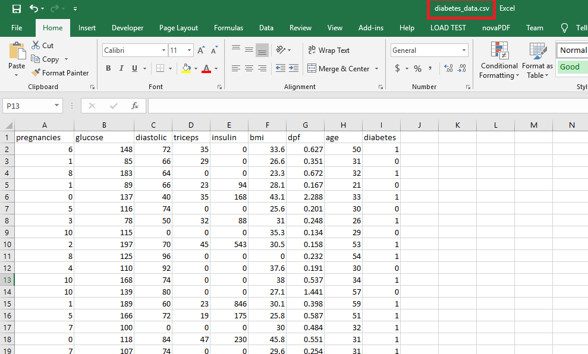
Figure 1
This is diabetes data which should be somehow imported to a SharePoint list.
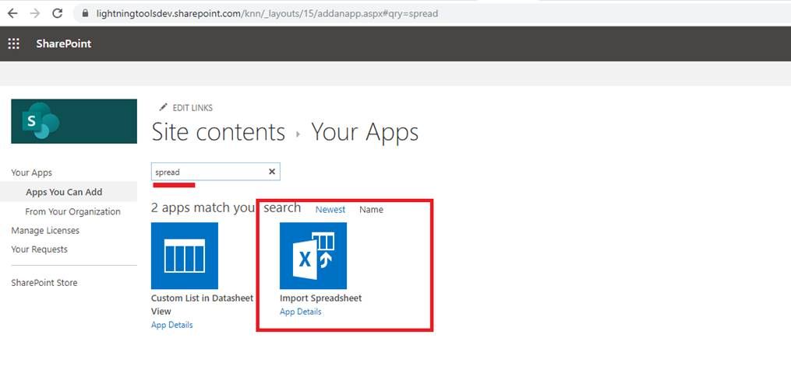
Figure 2
I am on Add an App page and searching the word spread to find Import Spreadsheet app in Chrome browser.
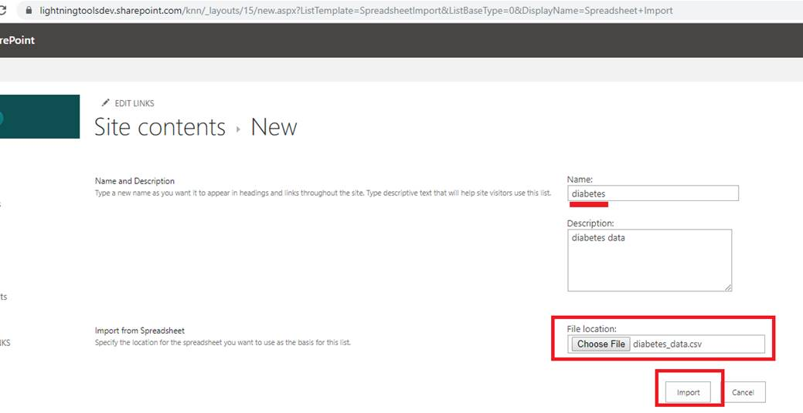
Figure 3
Diabetes_data.csv is selected and it is time to import it.
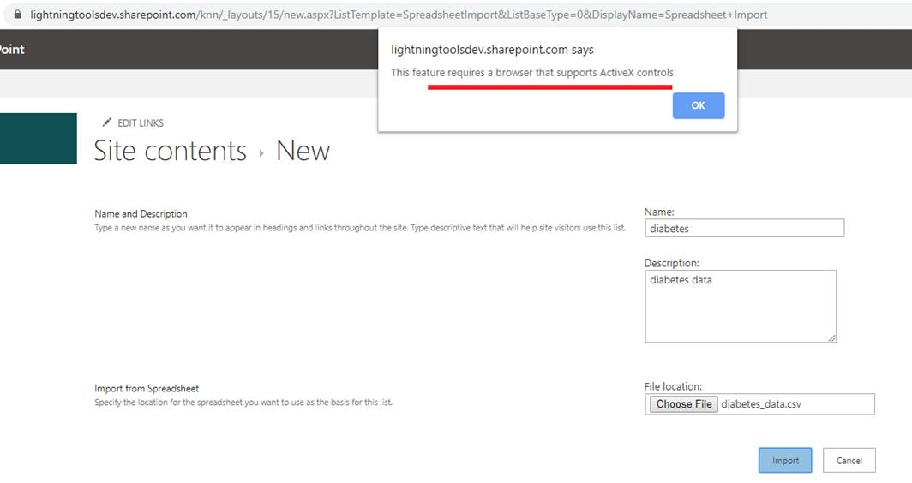
Figure 4
You see ActiveX control error after clicking Import button. For that reason, I switch to Internet Explorer 11.
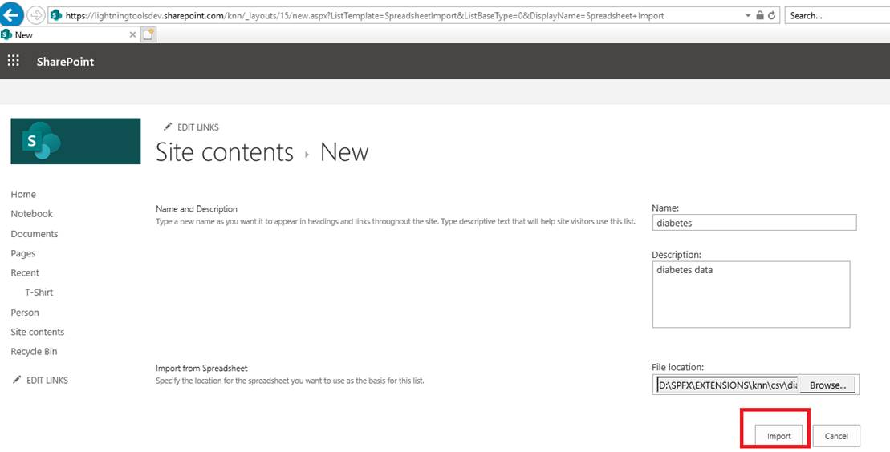
Figure 5
Importing the file in IE11.
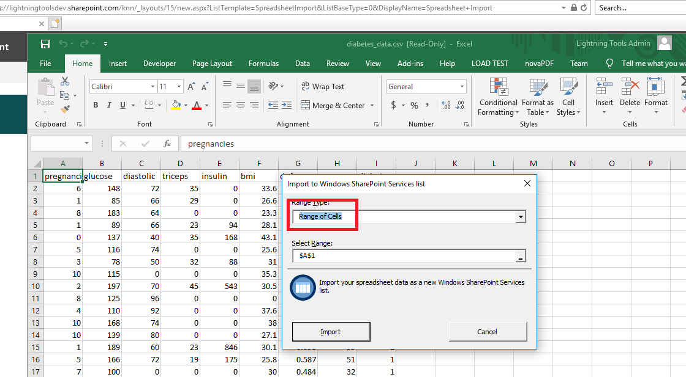
Figure 6
I select Range Type to Range of Cells option.
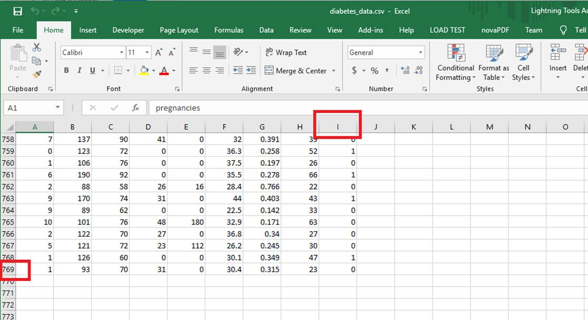
Figure 7
The last column is I and the last row is 769 in diabetes csv file.
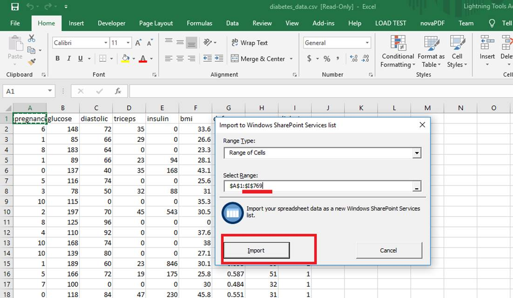
Figure 8
I append :$I$769 in Select Range dropdown and click Import button.
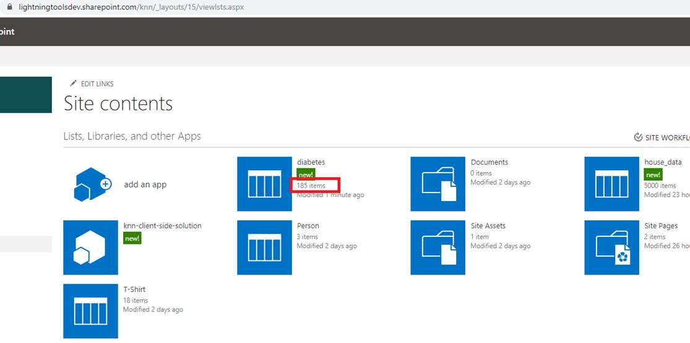
Figure 9
It takes some time to import data. You can refresh the page from time to time to see the imported rows count.
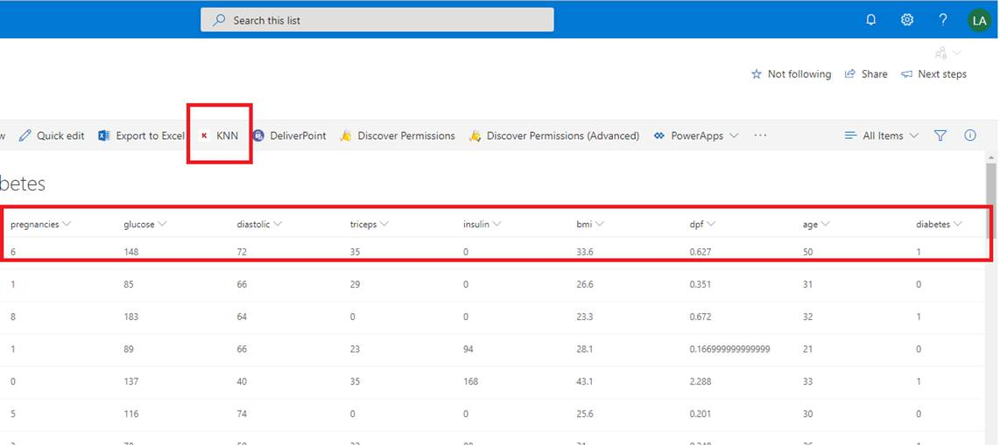
Figure 10
Diabetes data are successfully imported. I also installed KNN SPFx Commans Sets Extension which appears on the toolbar.
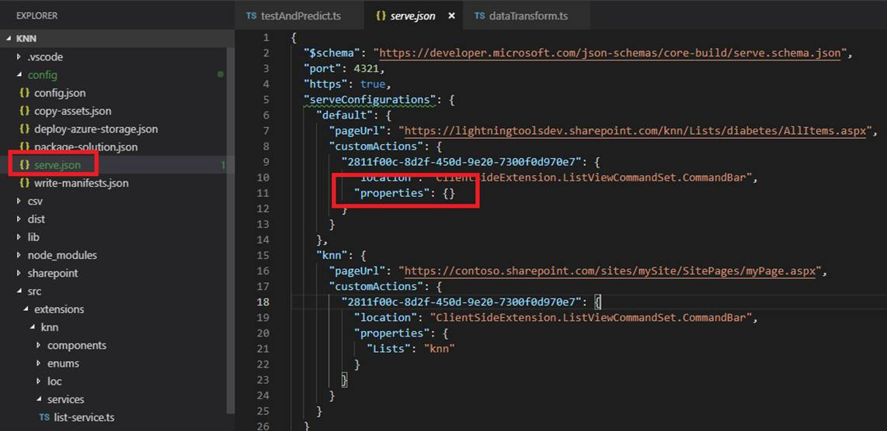
Figure 11
The app works on any list but you can restrict it.
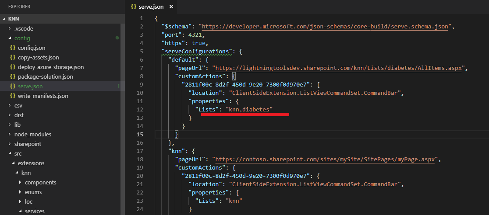
Figure 12
I restricted the extension only on knn and diabetes lists by specifying Lists property and comma separated list names. The extension will be visible only on those lists.
Let's understand what independent and dependent variables are in machine learning before running our extension.
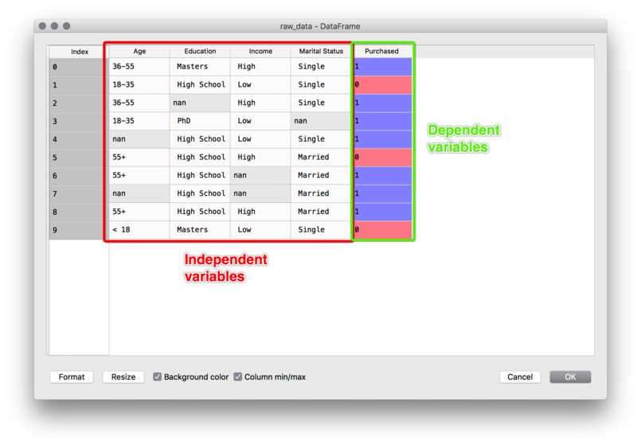
Figure 13
Independent variables (also referred to as Features) are the input for a process that is being analyzes. Dependent variables are the output of the process.
In the picture above, the independent variables are the input of the purchasing process being analyzed. The result (whether a user purchased or not) is the
dependent variable (also referred to as Label). For example, using KNN algorithm we may predict whether the result (a user purchased or not) is 0 or 1 with Age: 18 - 35,
Education: Masters, Income: High and Mariel Status: nan.
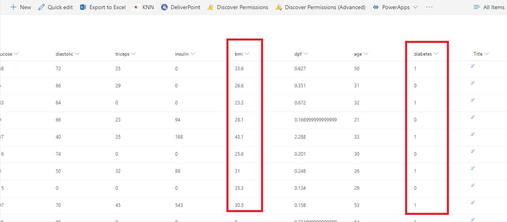
Figure 14
Let's back to our diabetes dataset. Say, I want to know if a user with, 29.3 bmi is considered diabetic or not based on our historical data. In this case our the single
independent variable or the feature is bmi and the dependent variable or label is diabetes. Before running analysis, we should understand if we solve classification or
regression problem (defined above). This is a classification problem as the label has distinct values. A classification problem has a discrete value as its output.
Note, that it is not necessary to have 0/1 or true/false output in classification case. The output can for example be colors such as, red, green, blue, yellow etc. some
discrete values.
bmi which stands for Body Max Index is a person's weight in kilograms (kg) divided by his or her height in meters squared. With bmi we define normal weight, overweight,
and obesity. bmi has some relation to type 2 diabetes. In general, a bmi of 18.5 to 24.9 is considered a normal, or healthy, weight. A bmi that ranges from 25 to 29.9 is
considered overweight. And bmi of 30 or higher falls into obese category.
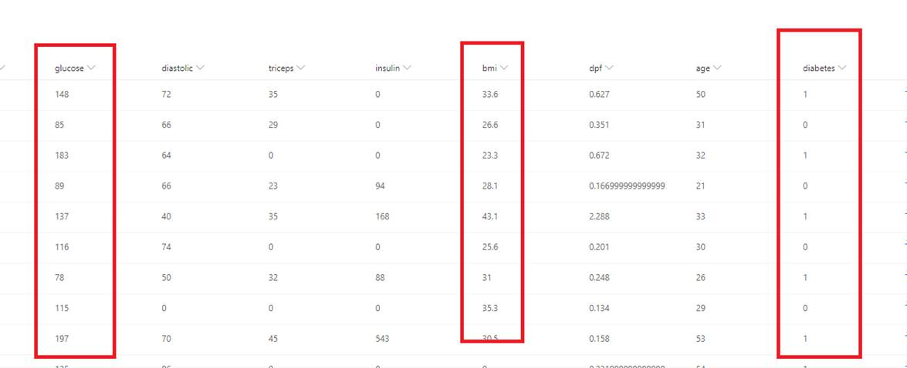
Figure 15
I may think that just having a single feature bmi is not enough to predict whether a person is diabetics or not and introduce the second feature glucose. For example, I want predict if a person with 29.3 bmi
and 88 glucose is considered diabetes or not. Blood glucose is at the heart of diabetes. The reason we have been diagnosed with diabetes is because the level of blood glucose in our blood is higher
than it should be.
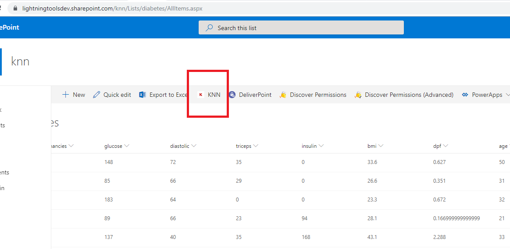
Figure 16
It is time to run the extension by clicking KNN.
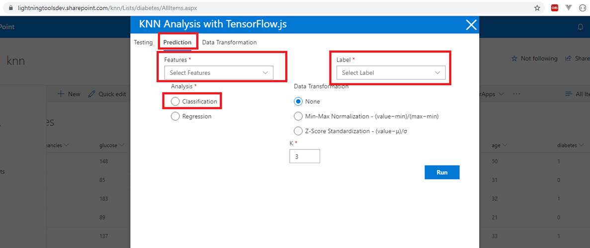
Figure 17
I switched to Prediction tab. In this page I select features, label and analysis type which is Classification in our case.
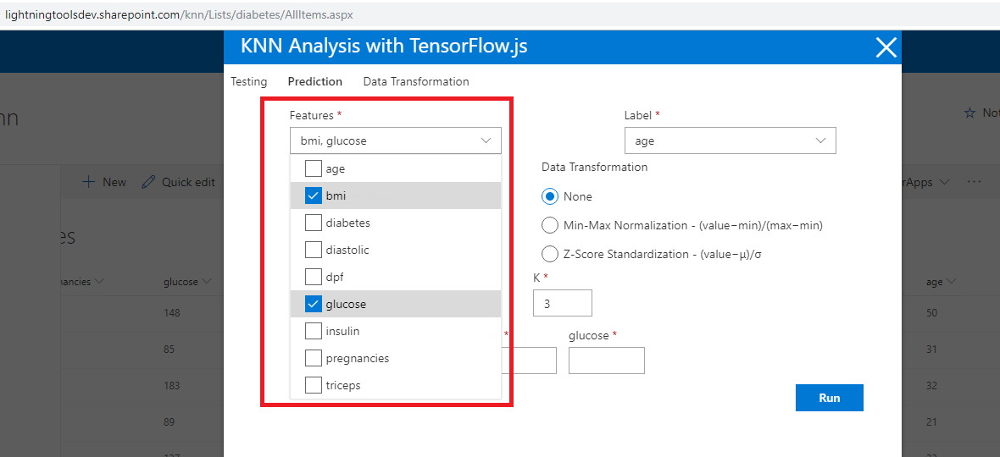
Figure 18
User can select multiple features.
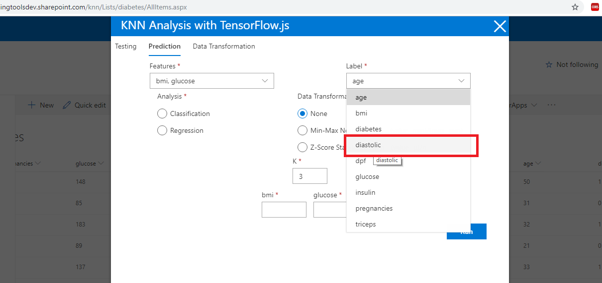
Figure 19
Only one label can be selected.
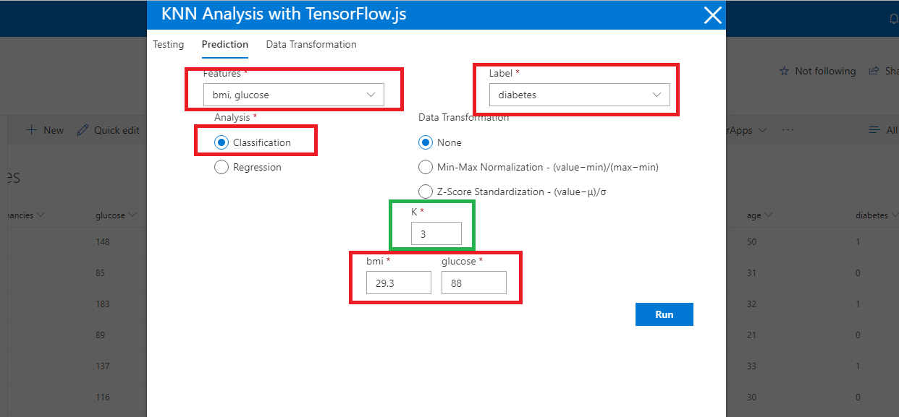
Figure 20
I selected features, label, classification and specified values both for bmi and glucose and ready to predict the outcome. But there is K and what it is?
K in KNN is a parameter that refers to the number of nearest neighbors to include in the majority of the voting process.
To understand what it means we should understand KNN algorithm steps at least
(more on description page https://ashot72.github.io/knn-tensorflowjs-spfx-extension/description/).
Step 1 Load the data
Step 2 Initialize K to your chosen number of neighbors
Step 3 Calculate the distance between the predicted point and the existing points
Step 4 Sort the ordered collection of distances from smallest to largest (in ascending order) by the distances
Step 5 Pick the first K entries from the sorted collection
Step 6 Get the labels of the selected K entries
Step 7 (regression) If regression, return the mean of the K labels
Step 7 (classification) if classification, return the frequent class of the K labels.

Figure 21
In here we have unclassified data (in red) and all other data already classified (yellow and purple), each one with class (A or B).
In case of K = 3 purple balls count is 2 and 1 for yellow and the frequent class is Classes B. But if we take K = 6 then the we have 2 purple balls and 4 yellow balls.
In this case frequent class is Classes A. So, how to choose K?
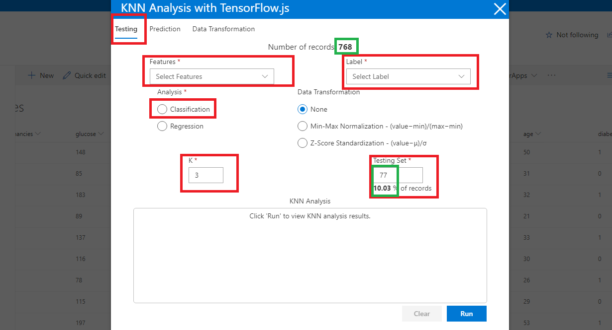
Figure 22
I am switching to the first tab which is the Testing tab. You can see that it is almost identical to the Prediction tab except for the Testing Set.
We split our data into two separate sets. The number of records is 768. One set is called testing set which is defined by a user and is 77 in this case. It is 10 percent of the
total records by default and can be changed by a user. Another one is the training set which is the total number of records minus testing set. In our case training set is 768 minus
77 equals 691 and the training set is 77. Usually, before we split data set into a testing set and training set, we shuffle our data.
For every single record inside of testing set we are going to run our k-nearest-neighbor algorithm using our training data.
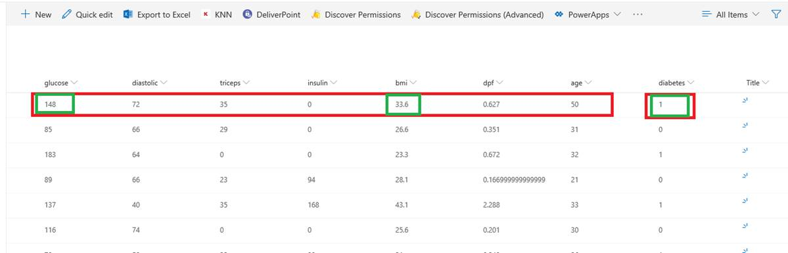
Figure 23
Suppose after splitting the data the line above belongs to testing set. We run the line against the training set and if the result is 1, we would say OK that is good we have a positive
result as the label is 1 as they match.
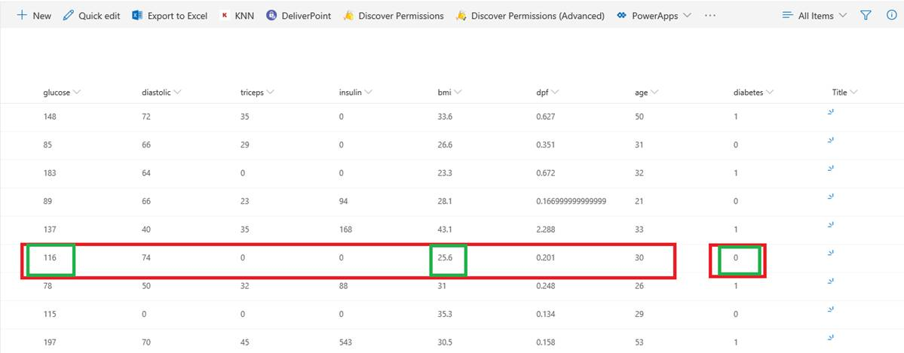
Figure 24
If we assume that this is another testing data and after the running it the result is 1, we will get a negative result as the label is 0. We will repeat the entire
process over and over until eventually exhaust all our training data (77 in our case). We will measure the accuracy and we can say pretty confidently
that if we make a change in K or if we introduce some new features to our data that could be an improvement.
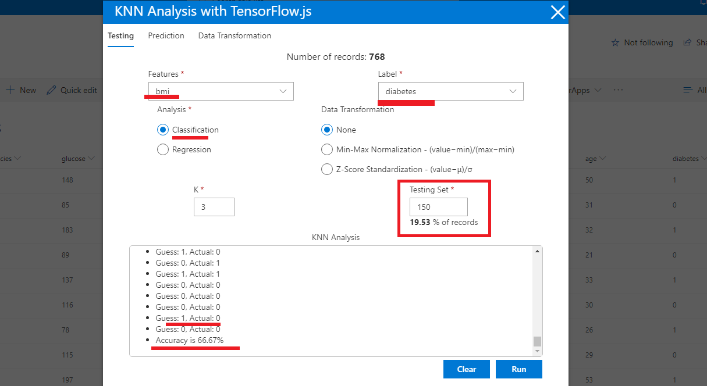
Figure 25
I ran analysis with a single feature bmi. I set testing set to 150 which is 20% of the training set. A value returned by KNN is Guess and the Actual is the training set Label (diabetes) value.
For example, in some cases we guessed 1, but the actual value was 0. Overall accuracy is 66.67%. You will get a different accuracy result each time running analysis even without modifying any
settings on Testing tab. The reason is that we shuffle data just before running analysis and the previous training set is different form the next one.
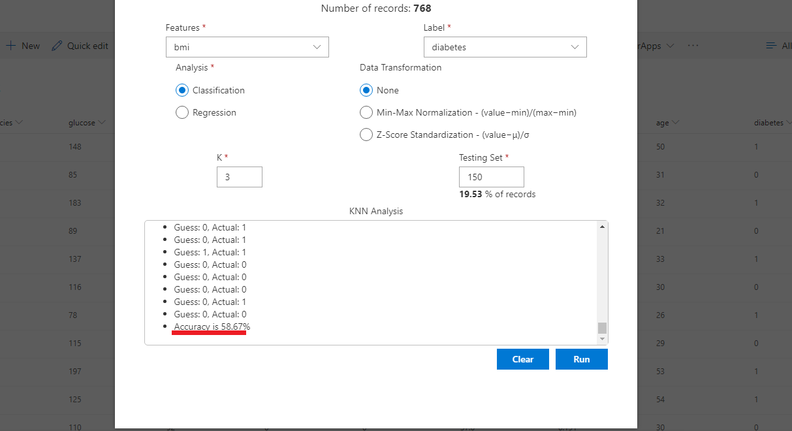
Figure 26
I ran the analysis with the same settings and got another accuracy. We calculate the accuracy percentage by dividing the correct numbers (correct when guess is equal to label) by training set
length and multiplying 100. For example, if the testing set is 150 and the correct numbers are 70 then the accuracy is 70 divided by 150 and multiplied by 100 equals 46.66%.
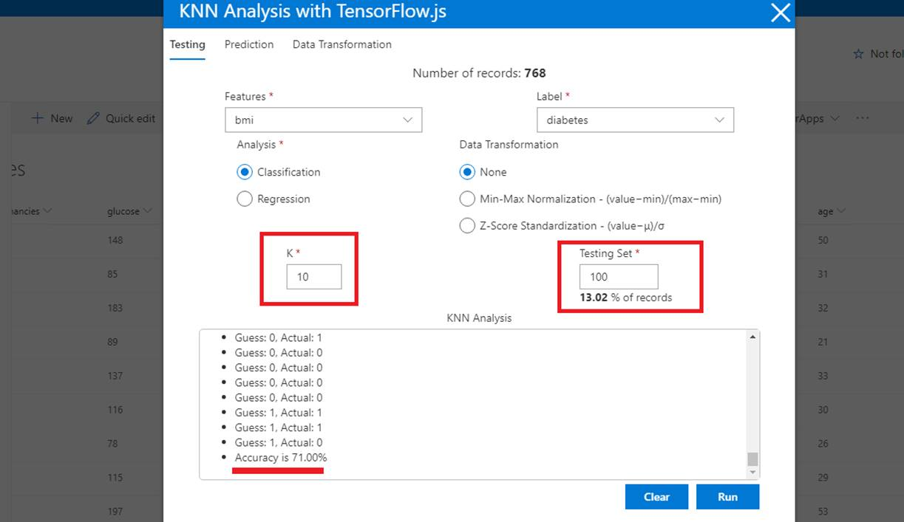
Figure 27
We may run analysis multiple times by changing K value, or testing set or both to see if we get better results.
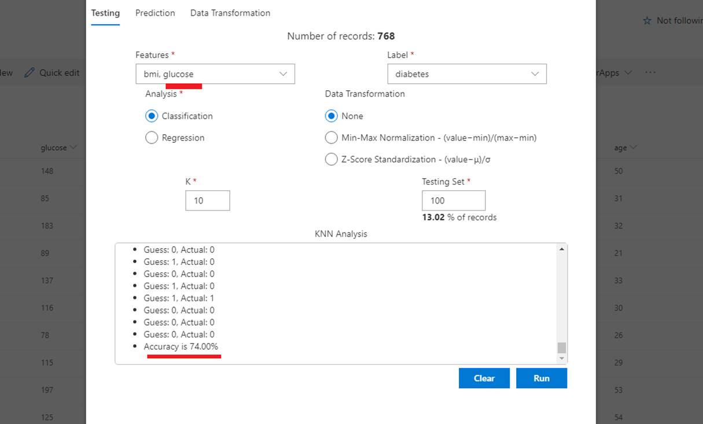
Figure 28
Another option to improve the result could be adding a feature. I selected glucose feature and running analysis against two features.
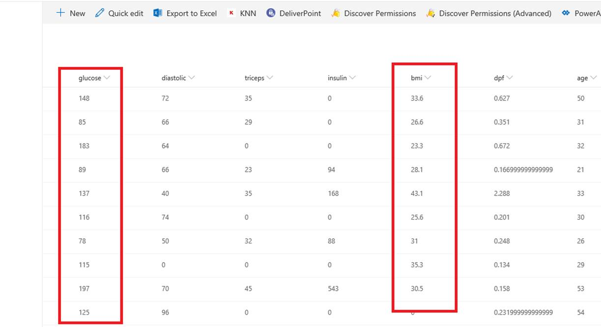
Figure 29
You should recall the KNN steps we were talking about. The third step says;
Step 3 Calculate the distance between the predicted point and the existing points.
We will go much deeper on description page on the topic that I am going to talk now. We need some knowledge at this point to analyze diabetics data. You can see that glucose values are generally larger
than bmi values. When we calculate the distance (step 3) the feature with the larger scale will completely dominate the other. For that reason, we should normalize or standardize data
(normalize and standardize are used interchangeably). The goal of normalization is to make every datapoint have the same scale so each feature is equally important.
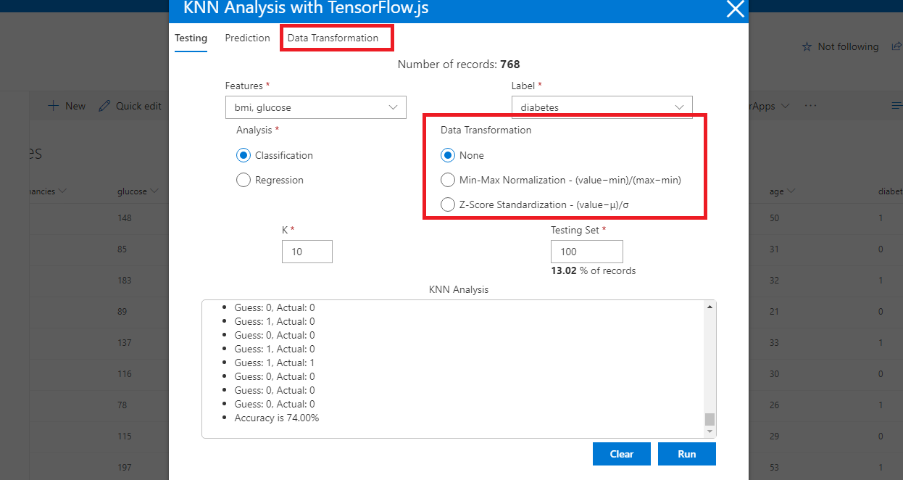
Figure 30
You may have noticed Data Transformation radio buttons on both Testing and Prediction tabs. The last tab is Data transformation tab.
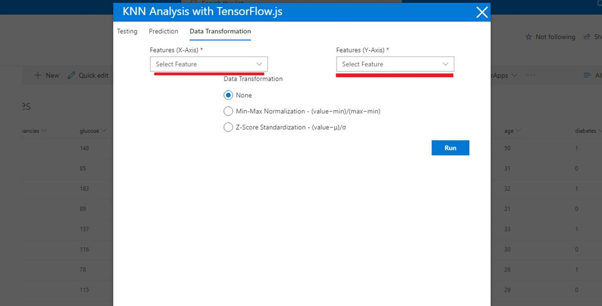
Figure 31
There are two dropdowns on this page in order to select two features.
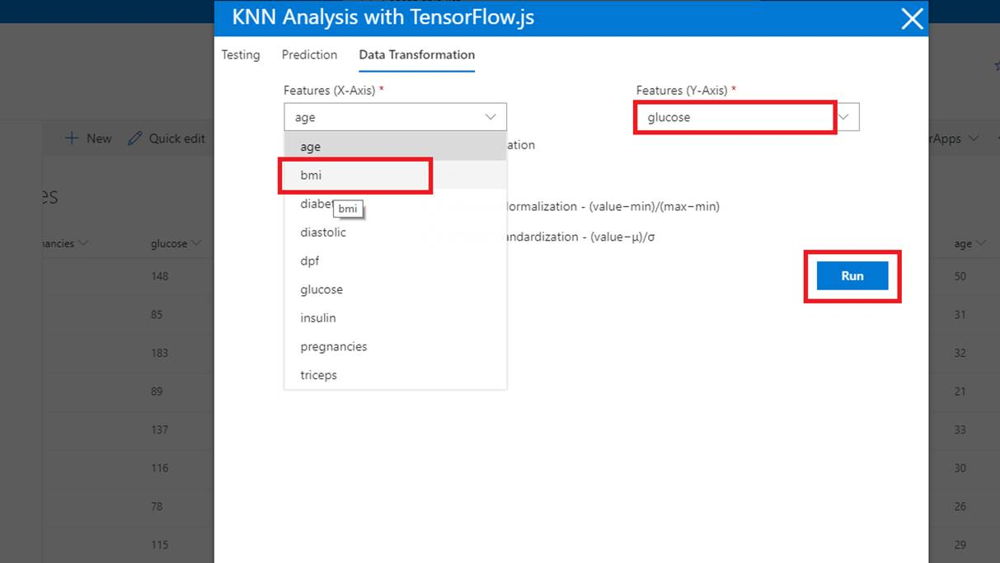
Figure 32
I select bmi on Feature (X-Axis) and glucose on Feature (Y-Axis) and click Run button.
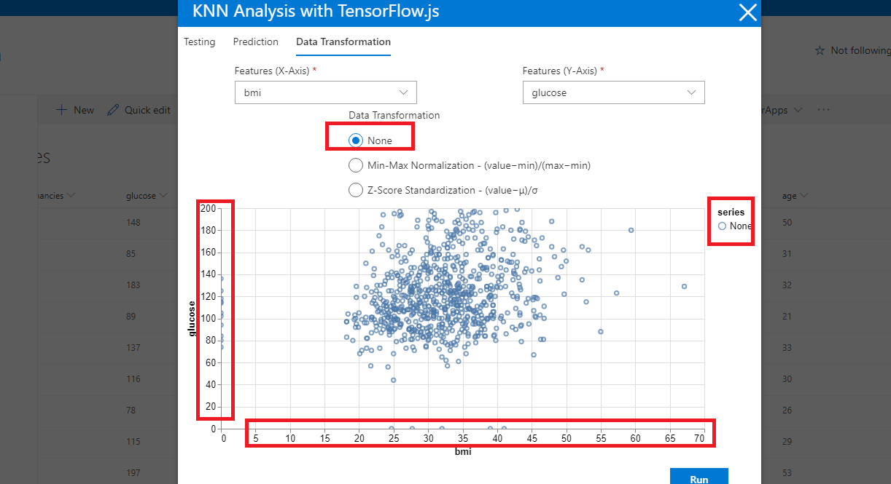
Figure 33
With None option we plot data without any modification. glucose range is from 20 to 200 whereas bmi range is from 5 to 70; different scales.
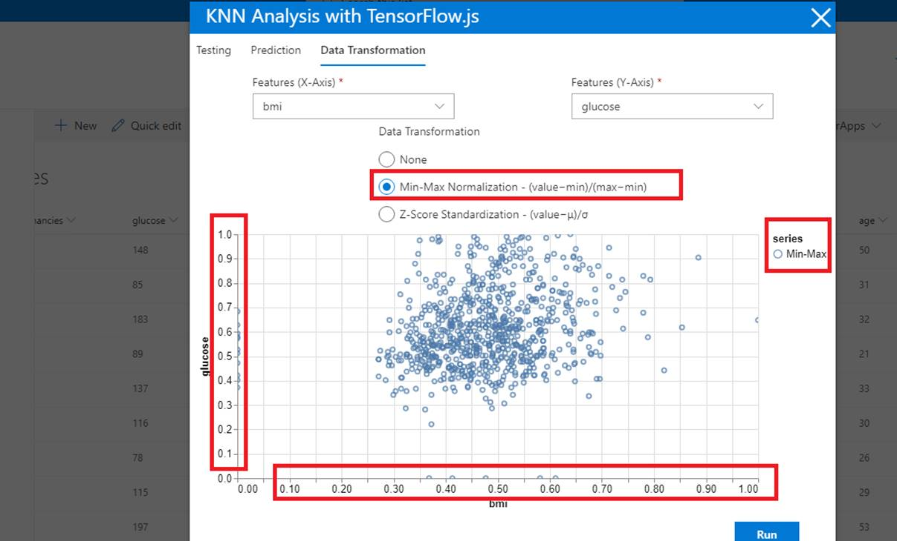
Figure 34
I selected Min-Max Normalization option and ran it one more time. Min-Max normalization is one of the most common ways to normalize data. For every feature, the minimum value of that
feature gets transformed into a 0, the maximum value gets transformed into a 1, and every other value gets transformed into a decimal between 0 and 1.
Min-max normalization: Guarantees all features will have the exact same scale but does not handle outliers well (will discuss outliers soon).
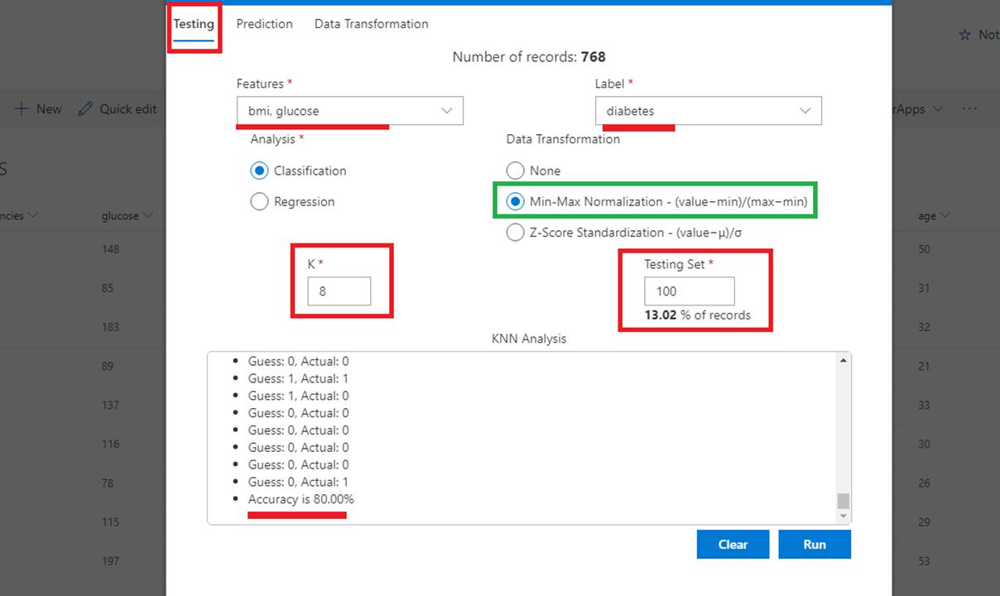
Figure 35
I am back to testing tab and testing it with Min-Max Normalization. Seems the accuracy is improved with bmi and glucose features, k = 8 and Min-Max Normalization.
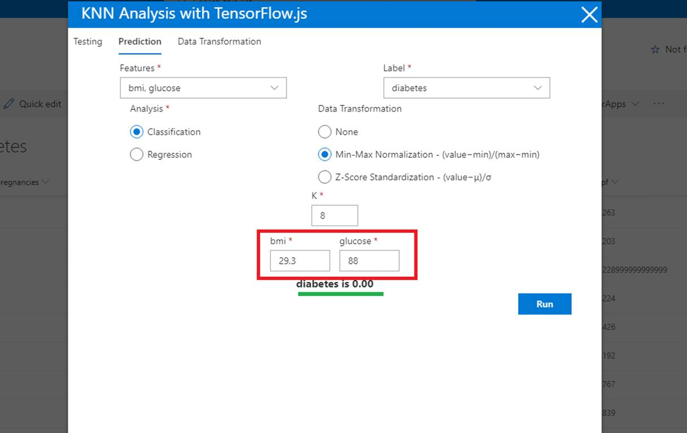
Figure 36
I am running the prediction with bmi 29.3 and glucose 88 and output is 0, which means that a person is not diabetics based on our prediction.
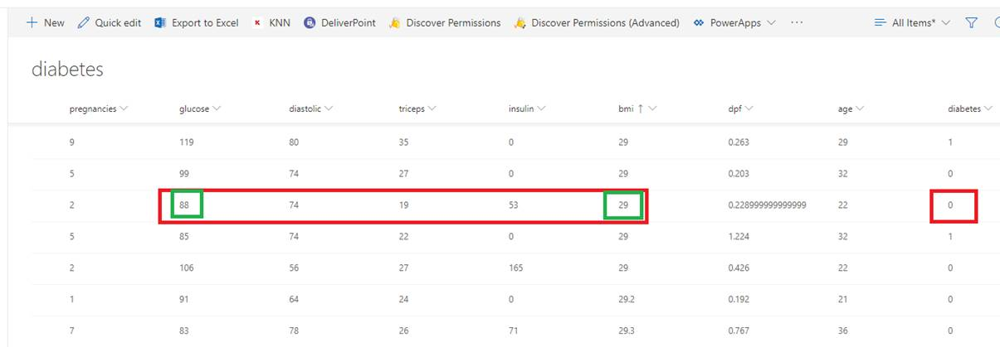
Figure 37
I search data and could see that there is a line with glucose 88 and bmi 29 which is close to our data and the result diabetes is 0. Seems our prediction was good.
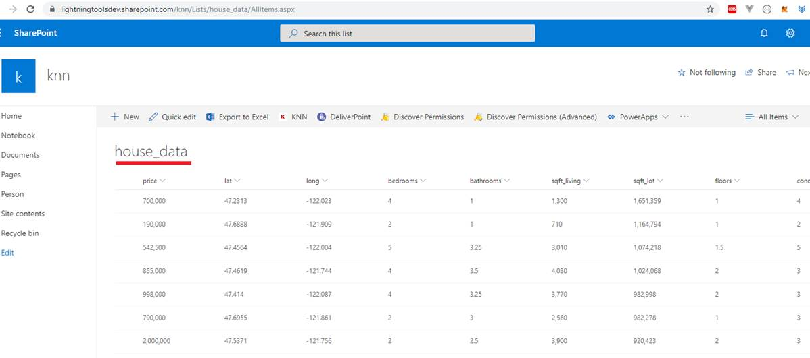
Figure 38
This is our second data called house_data which is also imported from a csv file. We are going to be working with housing prices.
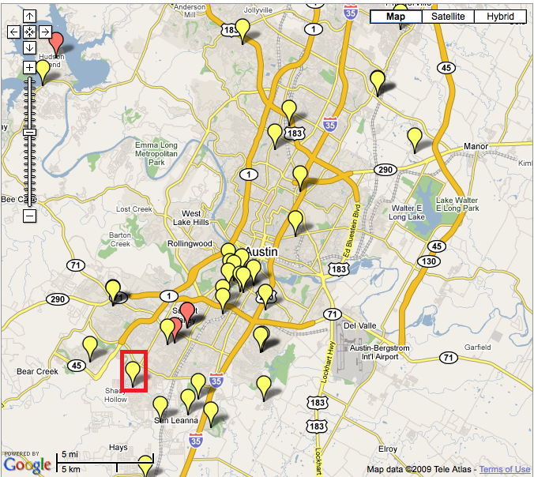
Figure 39
Imagine for a second that we have list of data or some locations of properties or locations of houses. We know exactly where the houses sit on the map and we know exactly
how much those houses cost. On the map the yellow markers represent the location of a house with some known monetary value. What we want to do is to able to drop a point
somewhere on the map (e.g. a marker inside the red rectangle) and know the value of a new house when up for sale. This is a regression problem, not a classification one as we do not
deal with discrete values (e.g. colors reg, green, blue etc.). We are going to find a price of the house given its location, bedroom etc. count and associated variables. Price is a continues
value. It can be $200000 or $200200 or $20001 etc.
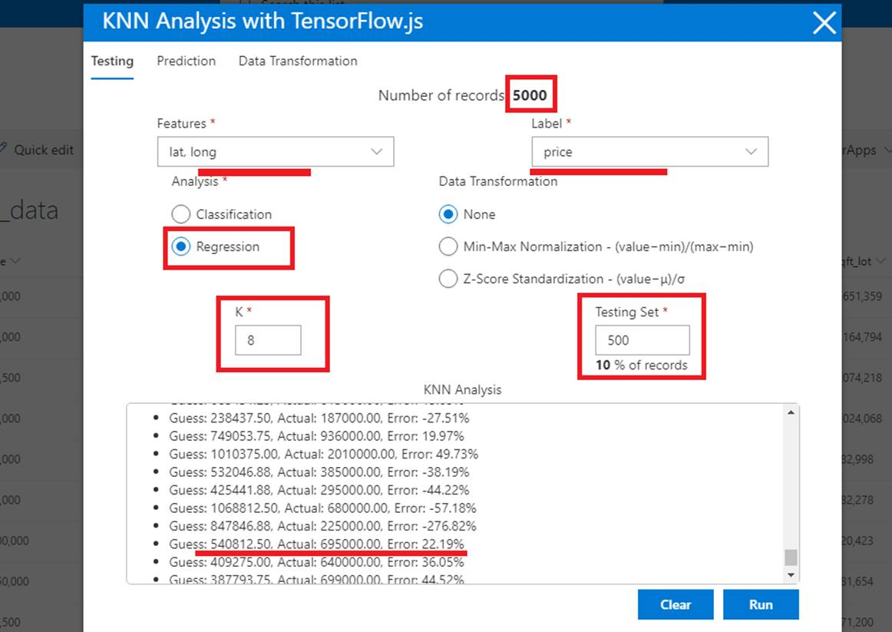
Figure 40
We select lat and long features to predict a house price by picking up regression option. This time we are going to instead report our error percentage or kind of
our accuracy using the following formula.
Error = ((Expected Value) - (Predicted Value))/Expected Value * 100
Expected value is the value of label itself. We are going to subtract from it the predicted value and then divide by the expected value and multiply by 100.
That will give us a percentage that we can say, OK we are like 10 percent off or 20 percent off.
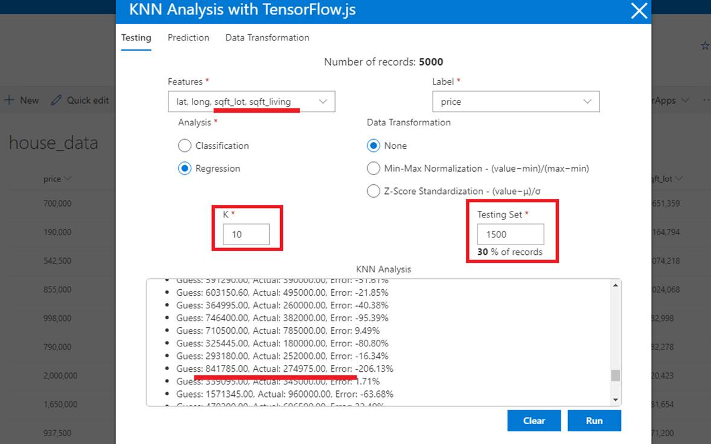
Figure 41
Like Classification analysis, we can add multiple features, select different K values, Testing Set and analyze data. The features I added was sqft_living and sqft_lot ones. If you have a large property or
large lot you are probably going to end up paying more. sqft_living and sqft_lot could be valuable features to include in our analysis.
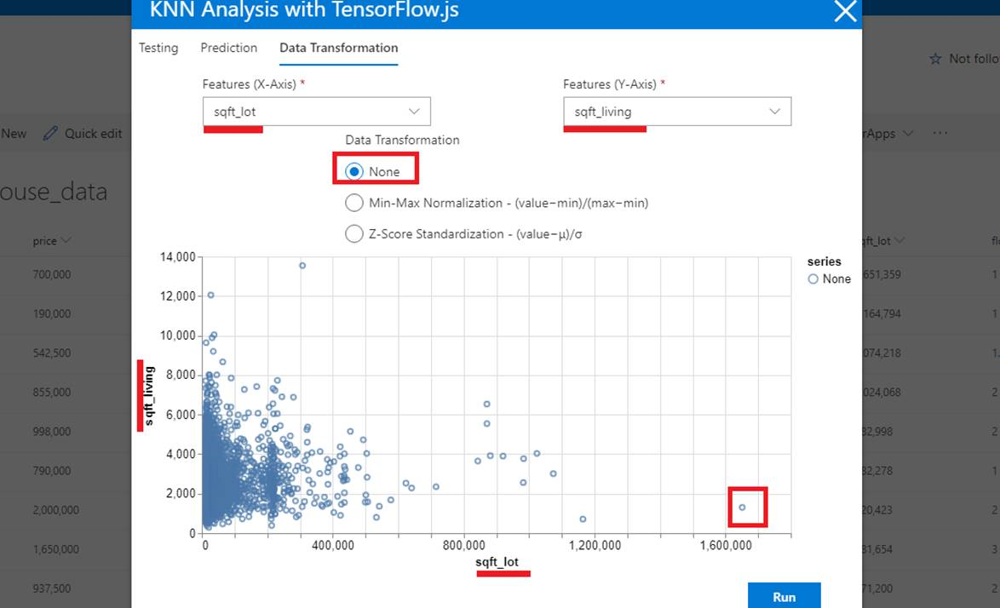
Figure 42
I switch to Data Transformation tab and plot sqft_living against sqft_lot. sqft_lot values are mostly way down to 400.000 but there are sqft_lot of 1.200.00 and 1.600.000 which are way off the scale.
The extreme value 1.600.000 is called outlier.
Outlier is an observation that diverges from an overall pattern on a sample.
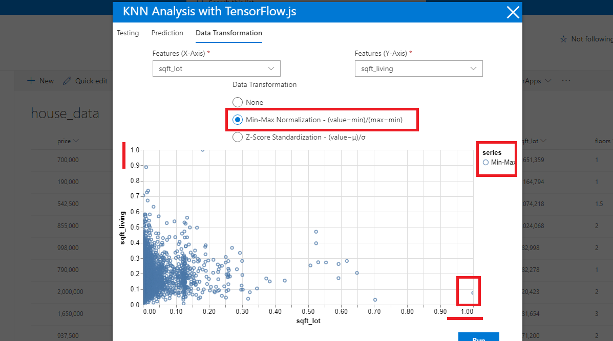
Figure 43
I applied Min-Max Normalization but the extreme value is still way off the scale, because with Min-max normalization all features will have the exact same scale between 0 and 1.
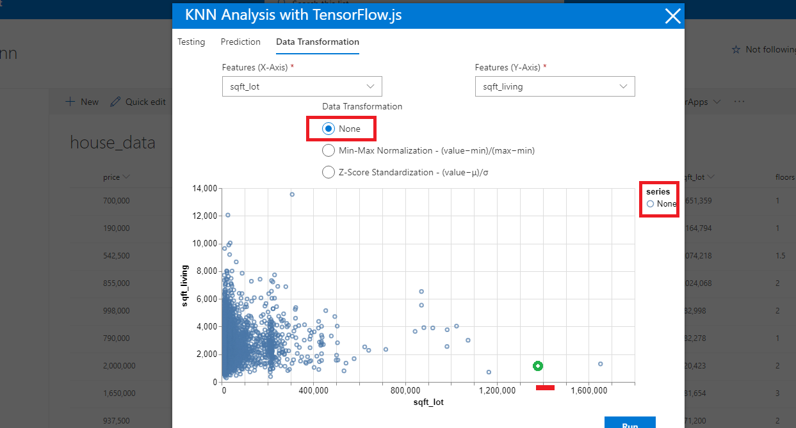
Figure 44
If we have some point we want to predict, say, the green circle on the diagram, we are going to include that incredibly large square foot 1.600.000 sqft_lot in our analysis or in our final average value.
This one 1.600.000 sqft_lot out here might have like a ridiculous price associated with it.
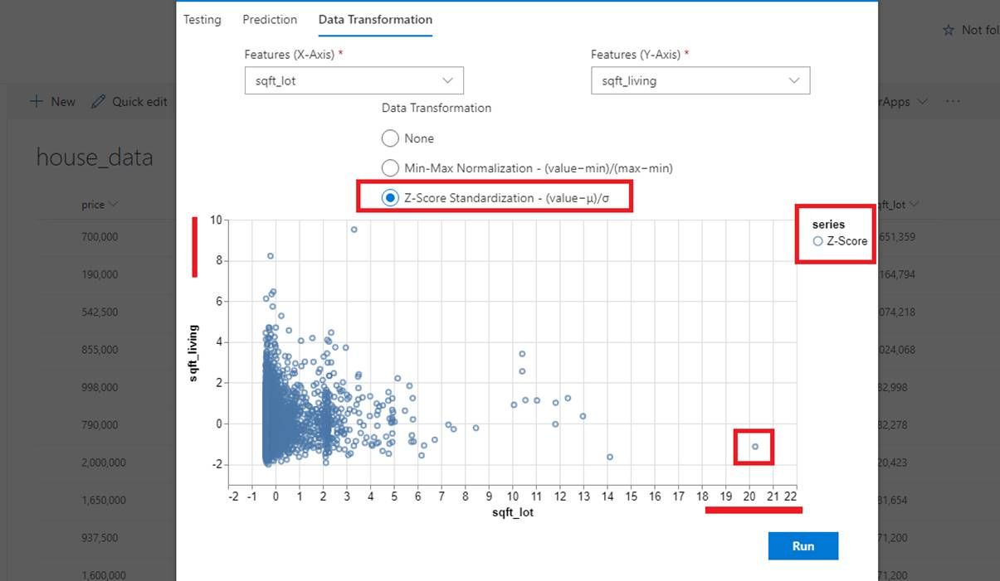
Figure 45
I selected Z-Score Standardization option. With Standardization the values are going to range from negative one standard deviation to one standard deviation with the average value failing
out around zero. The reason we are going to use standardization here is that it accounts for some very extreme values (outliers) much more nicely than normalization does.
While data still looks squashed, notice that the points are now on roughly the same scale for both features. The only potential downside is that the features are not on the exact same scale.
Z-Score standardization: Handles outliers, but does not produce normalized data with the exact same scale.
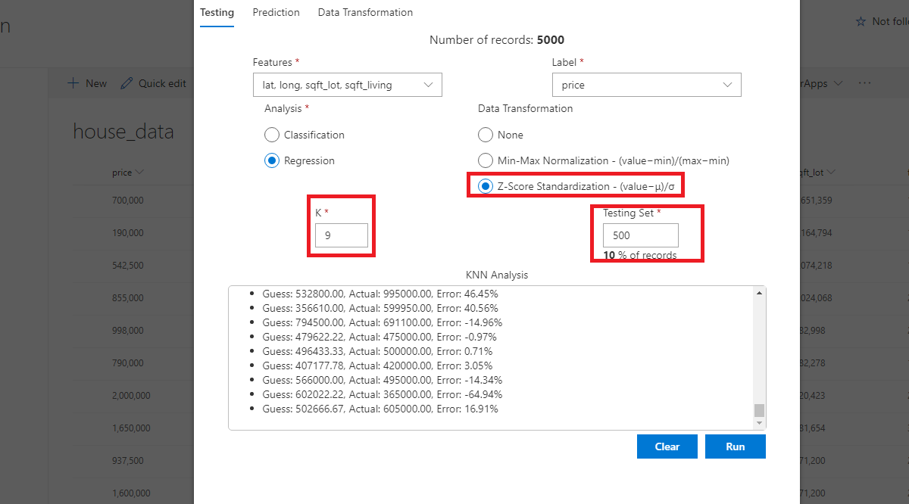
Figure 46
Now, you can test it with Z-Score Standardization option and find the optimal K value.
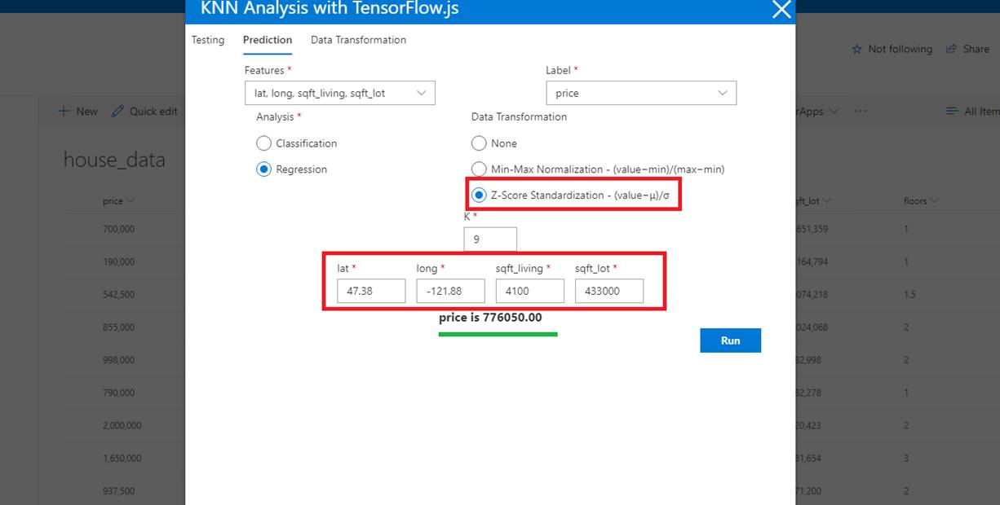
Figure 47
After find an optimal K value we are able to predict the price associated with lat, long, sft_living and sqft_lot which is $776050.